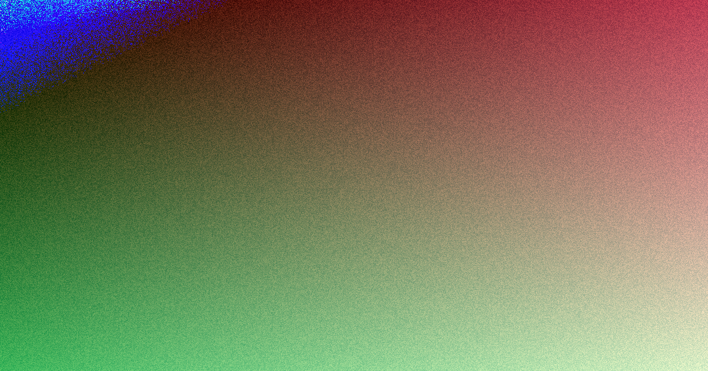

For an Adelaide business website, the clearest published figures are these: simple brochure-style sites for small businesses usually start in the low thousands, most small business builds take around 3 to 8 weeks from brief to launch, and hosting plus domain renewal are ongoing costs. The practical choice is the project type, such as brochure site, WordPress, ecommerce, landing page, redesign or maintenance, then getting inclusions and exclusions confirmed in writing before work starts.
For Adelaide business owners comparing web design adelaide options, the useful starting point is not a style preference, but the job the site must do once customers arrive.
Web Design Adelaide Explained
Web Design Adelaide frames a new build or refresh around enquiries, mobile performance and search-ready structure, which is a useful way to brief an Adelaide website project. Before asking for design concepts, define whether the site needs to explain a service, sell products, support a Google Ads campaign, replace an ageing site, or let staff update pages without a developer.
The published service list separates custom builds, small business websites, WordPress, ecommerce, redesigns, landing pages, search-friendly builds, and care plans. Each path changes the quote. A one-page campaign landing page is a different engagement from a Shopify or WooCommerce store, and a redesign that keeps existing rankings needs more planning than a clean first website.
- Ask what business action the main pages should support, such as enquiries, purchases or bookings.
- Confirm whether planning, design, build, basic on-page SEO, mobile optimisation and launch help are included.
- Ask what sits outside the initial build, especially hosting, domain renewal, maintenance and marketing.
Budget signals for the first conversation
The published guide says a simple brochure-style site for a small business usually starts in the low thousands, while custom, ecommerce or booking-enabled sites cost more. That is not a fixed quote. It is a starting point for comparing proposals by what they include, not only by the headline price.
A clear quote should turn the brief into named inclusions. For a local service, retail, consulting or professional business, the quote should state how many page types are being designed, whether content structure is included, what platform is being used, and whether the business can edit routine content after launch.
To compare like with like, give each designer the same brief. Include the number of pages, whether ecommerce or bookings are needed, whether existing rankings need to be protected, whether stock imagery is expected, and who supplies product, service and location content.
Platform choice affects day to day control
The source page names WordPress, Shopify and WooCommerce, alongside custom website design. The right platform depends on how the business wants to manage the site after launch. A business that needs regular page edits may value an easy-to-update WordPress build, while an online store needs product pages and checkout handled cleanly.
Ownership should be addressed before the first invoice. The page states that, in most agreements, the business owns the content, branding and finished website once it has paid in full. That statement belongs in the written scope because future access, editing and moving the site can depend on the agreement.
- Ask whether the site, content and branding are yours after final payment.
- Ask whether plugins, themes or licences have conditions that affect future use.
- Ask what training is included if your team will manage updates.
- Ask what support is available for backups, security and routine maintenance.
Redesigns need a different brief from new builds
A redesign is more than a visual update when the existing website already attracts search traffic or enquiries. The published service text refers to modernising an ageing or underperforming website without losing existing search rankings. That makes the brief more technical than colours, page layouts and images.
Before approving a redesign, list the pages that currently matter, the enquiries they produce, and the content that must be retained or improved. Ask how page structure, headings, URLs, redirects, metadata and launch checks will be handled. These questions help protect what already works while improving the parts that are outdated.
For broader reading on the same local search theme, this Adelaide website design guide offers another practical comparison point for planning a project brief.
Who this applies to
This guide is most relevant to Adelaide SMEs, sole traders and local service businesses that need a first website, a refresh, an ecommerce store, a campaign landing page, or ongoing website care. The source page says enquiries are welcome from greater Adelaide and the Adelaide Hills, and describes work across metropolitan Adelaide.
Locality should shape the brief only when it changes the website's job. A business serving walk-in customers may need clear contact pathways and location content. A service business across metro Adelaide may need service pages that explain coverage without turning the site into a suburb list. An ecommerce business may care less about suburb coverage and more about product presentation, checkout clarity and fast mobile performance.
Where the brief is still uncertain, use a short discovery note before requesting a finished quote. State the business type, current website status, preferred platform if known, rough page count, whether products or bookings are involved, and what a successful enquiry or sale looks like.
- Write the brief. Summarise the business, target customers, main services or products, preferred platform and the action each visitor should take.
- Ask for written scope. Request an itemised scope that confirms inclusions, exclusions, project milestones, content responsibilities and launch support.
- Check ownership terms. Confirm what you own after final payment, including content, branding and the finished website.
- Plan the launch. For new builds or redesigns, ask how mobile checks, basic on-page SEO, domain launch and post-launch maintenance will be handled.
| Project type | Best fit | Quote questions |
|---|---|---|
| Small business brochure site | A service business that needs clear pages, mobile usability and enquiry forms | What page count, copy structure, launch support and basic on-page SEO are included? |
| WordPress website | A business that wants to update routine content without a developer on call | What training is included, and who manages updates, backups and security after launch? |
| Ecommerce website | A business that needs Shopify or WooCommerce product pages and checkout | What product setup, checkout content and maintenance are included? |
| Website redesign | An ageing or underperforming site that may already have rankings | How will existing URLs, content, metadata and launch checks be handled? |
| Landing page | A campaign, launch or Google Ads pathway focused on enquiries | What conversion elements and form handling are included? |
Common questions
How much should a simple Adelaide business website cost? The source page says a simple brochure-style website for a small business usually starts in the low thousands. Custom, ecommerce or booking-enabled sites cost more, and hosting plus domain renewal are ongoing costs.
How long does a small business website usually take? Most small business websites are described as taking around 3 to 8 weeks from brief to launch. The timeline depends on scope and how quickly content is supplied.
What is normally included in a web design package? A typical package can include planning, design, build, basic on-page SEO setup, mobile optimisation and going live on your domain. Some builds also include stock imagery, content structure and a short training session.
Will I own the website after it is built? The source page says that in most agreements you own the content, branding and finished website once you have paid in full. Confirm the wording in the written scope before work starts.
When is WordPress a practical choice? WordPress is presented as suitable for businesses that want a flexible website they or their team can update without keeping a developer on call for routine changes.
This guide covers Adelaide website project scope, budget signals, platform choice, redesign planning, ownership and launch questions.